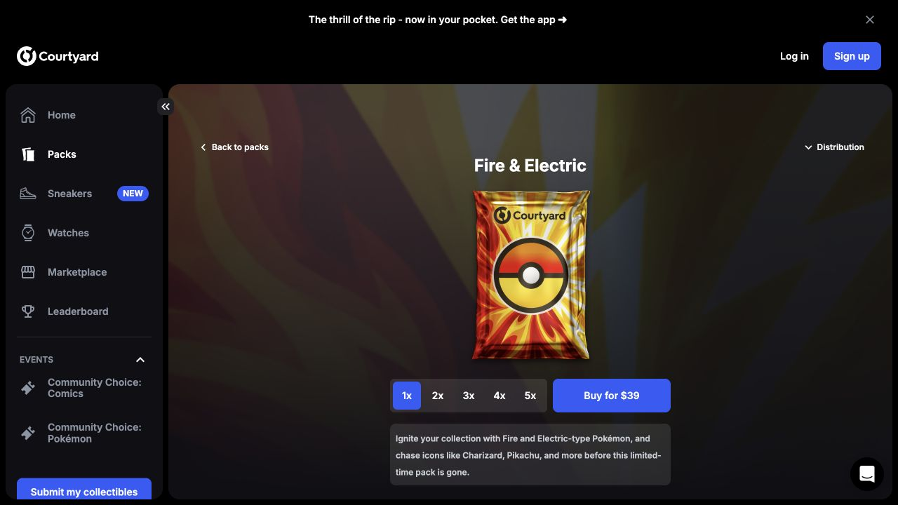
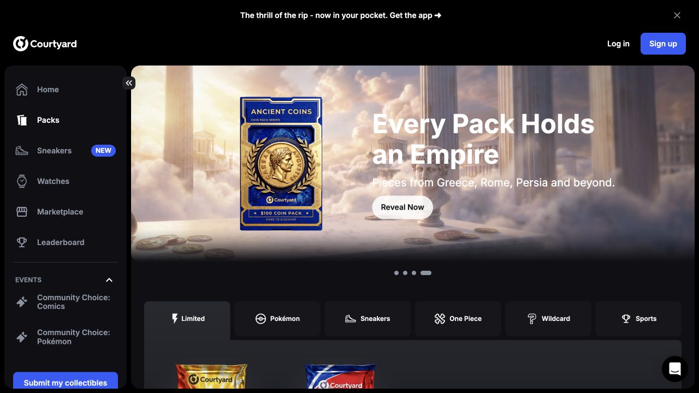
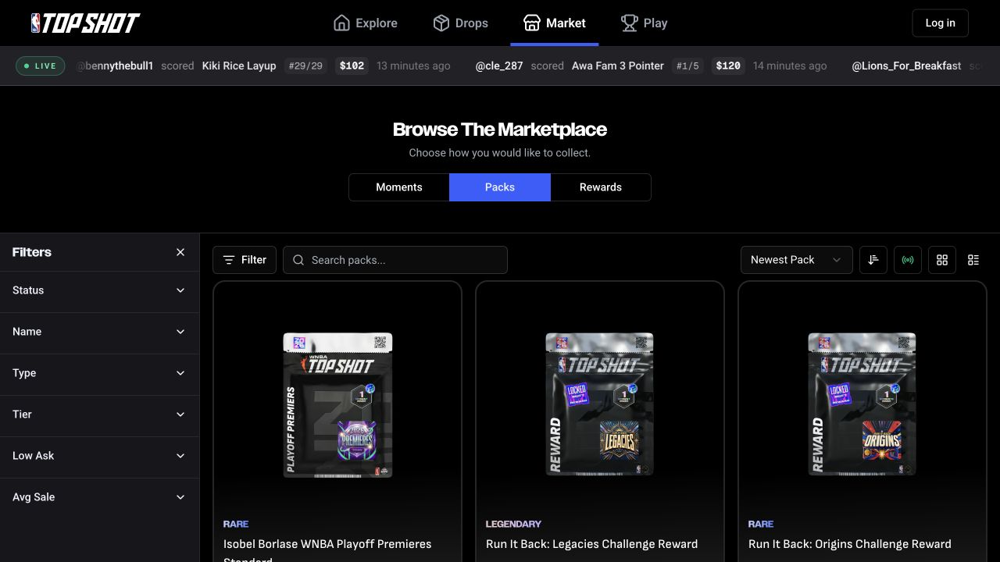
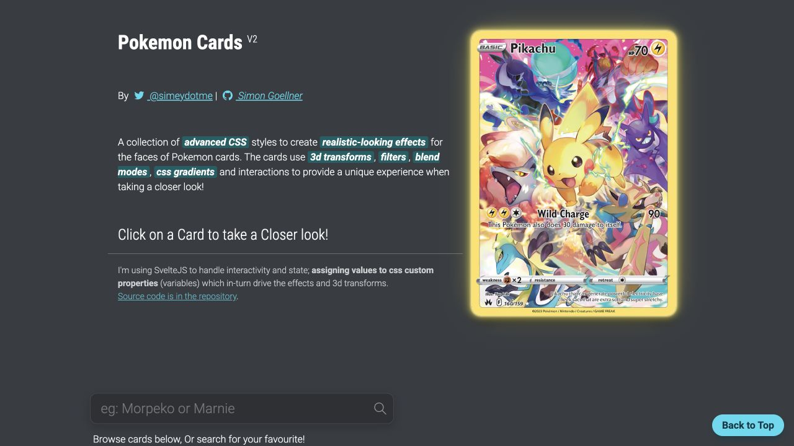

ImPacks / Design research / 11 October 2026
Make the pack feel collectible.
Make the position easy to read.
Recommended direction: Courtyard’s product display, a Pocket-inspired reveal sequence, and Top Shot’s collection browsing. Use a restrained foil effect on original ImPacks artwork.
Research and downloaded references for the existing React/Vite starter. Recommendations below are design proposals; the app has not been redesigned or connected to these libraries.
Product references to adapt
Courtyard — strongest overall web reference
The inspected catalog uses a dark shell, large pack artwork, category navigation, and visible purchase prices. Its detail screen puts one pack in the center, with a distribution control and purchase action close by. Catalog · Pack detail
Adapt: Give each ImPacks theme a physical-looking wrapper, a consistent silhouette, and one clear price. Keep the MVP’s three themes visible together; a large promotional carousel is unnecessary.

Actual public screen captured during this research. Prices and offers are a dated snapshot.
View the catalog screenshot

NBA Top Shot — collection and catalog structure
The live marketplace separates Moments, Packs, and Rewards. Pack browsing includes search, sorting, filters, and grid/table controls. The pack tiles keep artwork prominent. Pack marketplace · Official guide
Adapt: Start with a card grid for My Collection; add a compact position table when collections grow. Filter by theme and execution status. ImPacks has no defined rarity system, so use its real market and order fields instead of rarity badges.

Actual public marketplace screenshot; product availability changes.
Pokémon TCG Pocket — reveal and collection inspiration
Official materials center on opening boosters, immersive cards, and displaying collections in binders and boards. This is a mobile-game reference, not a reusable web UI kit. Official site and trailers · Collecting guide
Adapt: A pack-focused opening stage followed by three individual card reveals and a collection summary. This proposed sequence is inspired by the product; a signed-in game session was not tested.
EA FC Ultimate Team — probabilities at the decision point
EA documents a “Show Pack Probabilities” option under eligible store packs, with probability categories explained before purchase. Official probabilities documentation
Adapt: Put “How selection works” beside the ImPacks action: three distinct markets, equal selection within the eligible pool, and a 50/50 side assignment. Clearly distinguish selection odds from a market’s implied outcome probability.
Pokémon Cards CSS — foil finish study
Simon Goellner’s demo shows pointer-driven tilt, glare, layered gradients, and several holographic finishes. Interactive demo · Source / GPL-3.0
Adapt: Study how light moves across the card. This is a visual reference only in this bundle; its source and Pokémon art are not imported. Use the downloaded MIT card effects or an original CSS treatment for ImPacks.

Actual reference screenshot; third-party artwork is for design review.
Downloaded UI packs and components
Kenney UI Pack 2.0

430 advertised assets for interface controls. Useful for a playful game-like prototype; less suited to the final premium trading-card finish. Official page
Download local ZIP · CC0 license
Kenney Playing Cards Pack

270 advertised assets. Useful for placeholder card backs, dimensions, stacks, and simple flip experiments. Replace playing-card faces with original market cards. Official page
Download local ZIP · CC0 license
Magic UI — recommended source components
Three React components downloaded from a pinned upstream commit. The MIT notice is included. These are reference source files, not installed dependencies.
Also shortlisted: Aceternity 3D Card Effect for depth and tilt. Link only; it was not downloaded and its license was not verified during this pass.
Download manifest records original URLs, licenses, retrieval date, SHA-256 checksums, and the Magic UI commit. Both ZIP archives passed integrity checks.
Recommended ImPacks flow
These are proposed product decisions based on the repository’s existing MVP contract, not claims about competitor behavior.
- Choose a theme. Three tall wrappers for Crypto, Sports, and the third configured theme. Every tile shows “3 random picks,” “15 AUSD,” and a visible Demo label. Selection adds a clear outline and check indicator; glow is optional.
- Review the opening. Show total cost, three allocations, eligible market pool, side assignment, fees, and possible unspent remainder. Explain the current demo/testnet/sandbox separation using the app’s actual mode.
- Confirm and wait. Distinguish payment processing, market selection, and order execution. Persist the server’s opening ID so a retry or reload resumes that opening.
- Reveal the stored result. Center the wrapper, open it, then reveal three cards individually. Always provide Reveal all and a reduced-motion path. Animation timing and pointer position must never change the selected markets or sides.
- Read each position. Put the full question and YES/NO first; then entry price, executed quantity, actual spend, and fill status. Preserve failed or partial orders in the summary instead of presenting all cards as successful trades.
- Keep the collection useful. End with View collection and an explicit Open another pack action. Retain clear Demo labeling and show execution state alongside the collectible artwork.
Visual proposal: charcoal canvas, restrained violet or electric-blue controls, distinct theme artwork, crisp light text, and foil only on the card surface. Keep side labels and execution statuses textual; do not imply that a decorative finish predicts profitability.
Frontend handoff
The inspected starter uses React 19, Vite, TypeScript, and ordinary CSS. Its PackTile.tsx and PredictionCard.tsx are the natural integration points.
- First pass: redesign PackTile’s wrapper and PredictionCard’s information hierarchy with existing CSS. Add a deterministic reveal state machine driven by server results.
- Effects: adapt Glare Hover first. Magic Card also imports
motion/react and next-themes; the starter currently has neither. Its utility classes need Tailwind or a CSS translation. - Utilities: registry-utils.ts is the minimal upstream
cn helper (clsx and tailwind-merge). utils.ts is the larger website helper captured with the source; prefer the minimal helper if integrating. - Animation: Shine Border needs the included registry animation/keyframes configuration. Honor reduced motion, support keyboard activation, and preserve focus after reveal.
- Validation when implemented: check a 320px layout, keyboard selection, Reveal all, reduced motion, reload during opening, duplicate submission prevention, and partial/failed order rendering.
Public catalog/detail screens and official documentation were inspected. No purchases or signed-in openings were performed. Screenshots are reference material; downloaded CC0/MIT assets have separate reuse terms included in the bundle.